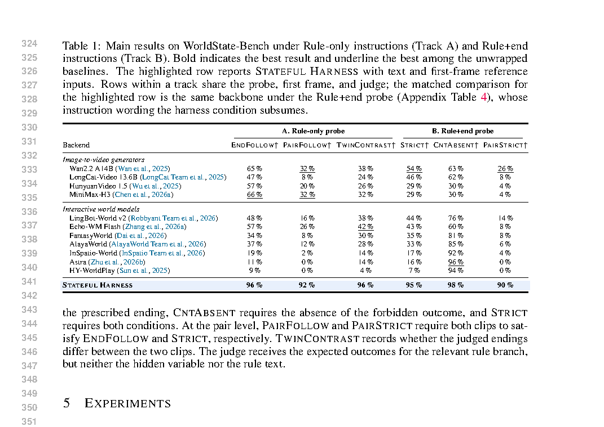

State World Models with the Stateful Harness. The same initial frame and the
same action can lead to different outcomes under different world states. The harness
executes predefined rules to determine the event before a frozen video model
renders it — illustrated by the red and blue elemental states — and the generated clip
becomes the visual anchor for the next turn.
Abstract
Existing world models can generate action-conditioned video from a single image. Many
focus on camera motion, allowing users to move through the generated scene. However,
navigation alone does not ensure that an action follows persistent rules when its
outcome depends on state that is invisible in the current frame. We present
Stateful Harness, a framework that separates world evolution from video
rendering to support stateful and rule-governed interaction. It maintains an evolving
world state under specified rules, renders each resulting event with a frozen video
model, and uses the generated clip to update the world state for the next turn. At
each turn, the harness resolves the action selected by the user and compiles the
resulting event into an instruction, while a preview clip from an editable 3D scene
provides spatial and camera guidance. To evaluate rule compliance, we build
WorldState-Bench, a benchmark of 50 counterfactual twin pairs that share an
initial frame and action but differ in hidden state and required outcome. Under
rule-only prompting, the best of the 11 evaluated video backends produces the required
endings for both cases in 32% of pairs. For MiniMax-H3, specifying the required endings
raises this rate from 32% to 64%, while the full harness reaches 92% with the
same frozen model. These results support separating rule execution from video rendering
for world interactions with hidden state.
92%
PairFollow with the full harness (same frozen MiniMax-H3 weights)
video backends evaluated under the same probe and judge
Contributions
A diagnostic for rule compliance
Counterfactual twins hold the visible input and action fixed while changing hidden
state. WorldState-Bench contains 50 such pairs across 21 themes, with outcomes
derived from typed rule programs.
A runtime for explicit state
The Stateful Harness settles actions in code, maintains semantic and spatial state,
and sends the resulting event through text and spatial-reference channels to a
compatible frozen video backend.
A controlled comparison
On the same MiniMax-H3 weights, the full harness improves twin-joint accuracy from
32% with rule-only prompting and 64% with the ending supplied to 92%.
How a Turn Works
1 · Action selected
The player observes the current scene and picks an action; free-form
input is also supported.
2 · Rules settle it
A deterministic rule program resolves the action against explicit
semantic and spatial state — before any rendering.
3 · Event compiled
The settled outcome is compiled into a VisualScript instruction; a
preview clip from an editable 3D scene guides camera and layout.
4 · Pixels rendered
A frozen video model renders the event; a VLM reads the clip back and
the state advances to the next turn.
Rule execution, video generation, and visual observation form a closed loop that yields
state world models.

A multi-turn duel rendered by the harness on the same frozen weights: every turn is
settled by rules first, then compiled into a per-turn instruction with a four-beat
timeline — one action, one sentence — before the frozen video model renders it.
Nine Worlds, One Runtime
Every world below is a JSON definition: typed rules, hidden variables, and a fixed
camera. The same runtime settles actions, compiles a four-beat VisualScript, and
renders with a frozen video model. Click a card to play its highlight reel —
all clips are raw harness outputs, unedited.
WorldState-Bench: Main Results
PairFollow requires both counterfactual clips to show their required endings;
PairStrict additionally requires the forbidden ending to be absent. Rule-only prompting
describes the rules; Rule+end also reveals the required outcome. The highlighted row is
the full harness — the same frozen MiniMax-H3 weights, text and first-frame reference.
Backend
A. Rule-only probe
B. Rule+end probe
EndFollow↑
PairFollow↑
TwinContrast↑
Strict↑
CntAbsent↑
PairStrict↑
Image-to-video generators
Wan2.2-A14B
65%
32%
38%
54%
63%
26%
LongCat-Video 13.6B
47%
8%
24%
46%
62%
8%
Hunyuan-Video 1.5
57%
20%
26%
29%
30%
4%
MiniMax-H3
60%
32%
32%
29%
30%
4%
Interactive world models
LingBot-World v2
48%
16%
38%
44%
76%
14%
Echo-WM Flash
57%
26%
43%
43%
60%
8%
FantasyWorld
34%
8%
30%
35%
81%
8%
AlayaWorld
37%
12%
28%
33%
85%
6%
InSpatio-World
19%
2%
14%
17%
92%
4%
Asra
11%
0%
14%
16%
96%
0%
HY-WorldPlay
9%
0%
4%
7%
94%
0%
Stateful Harness (ours)
96%
92%
96%
95%
98%
90%
Under review — numbers transcribed from the submission; the benchmark, judge prompts,
and per-clip verdicts will be released with the camera-ready version.
BibTeX
@inproceedings{
stateworldmodels2027,
title = {State World Models: Execute the Rules, Generate the Pixels},
author = {Anonymous Authors},
booktitle = {Under review at the International Conference on Learning Representations (ICLR)},
year = {2027},
note = {Paper under double-blind review. Citation will be updated upon acceptance.}
}